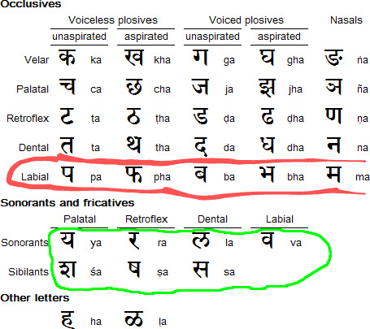
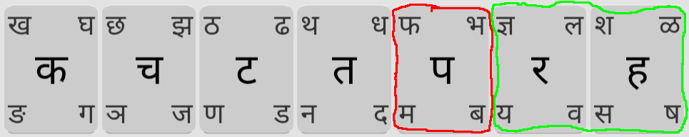
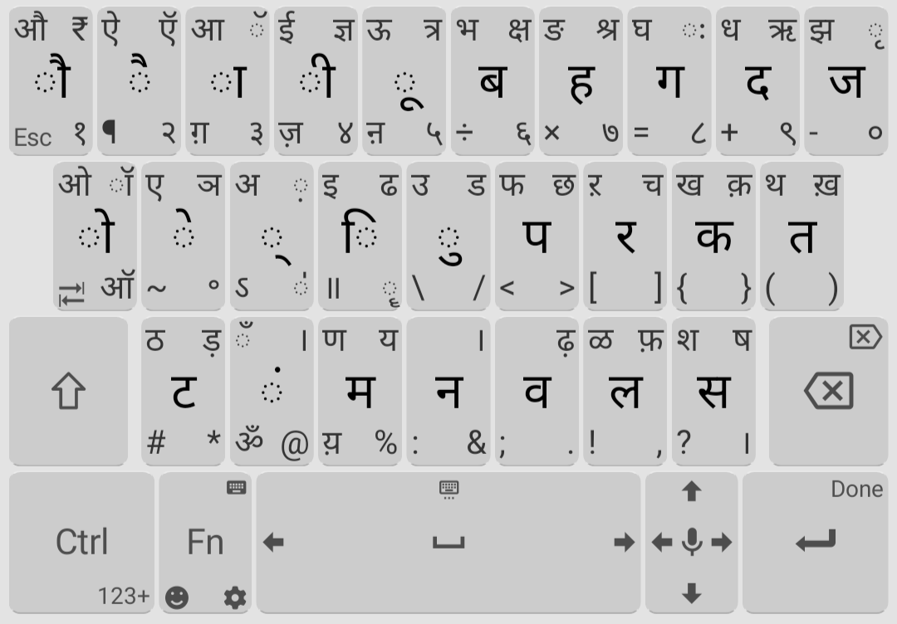

Background
Over a year ago, I started learning Hindi. After becoming good friends with this group of Indian boys from college, I became interested in Hindi. I wanted to be able to hold a conversation in Hindi, as well as text/type in Hindi.
Hindi uses a different script, namely Devanagari. Although it's possible to write hindi using roman characters, I didn't want this. I wanted to be able to type in the real deal which is Devanagari. This meant learning the Devanagari script as well as some new Devanagari keyboard layout on mobile.
I'm only interested in typing on mobile (not desktop, nor handwriting). It's 2023 - only relevant skills!
Learning about Devanagari
First, Devanagari a phonetic script, meaning:
- each character represents a specific sound
- each sound has a specific character which represents it

The non-phonetic-ness of English has some interesting consequences: we have spelling bee's. This is because in English, spelling is non-trivial. In phonetic languages like Hindi, spelling is trivial: you just sound out the word and that is also the spelling.
Q: Do you think they have spelling bee's in India?
A:
Actually they do! (but in English).
Another consequence: it's possible to be able to read Devanagari out loud without understanding the meaning.
The Actual Layout
behold! (Swipe to the corner to type that character)

on Google Play Store only.
More frequent characters are a tap; less frequent characters are a swipe.
Consonants Row
In Devanagari, the consonants are grouped by tongue movements:
 sourceFor example, look at "Labial" group: प=p, फ=f, ब=b, म=m, (these are all lip-movements).
Let's have a key for each consonant group.
Further organization:

- Circled in red: aspirated consonants
- Circled in blue: unaspirated consonants
- Circled in yellow: nasal consonants
- Circled in green: the oddball consonants

Here, each circled pair of consonants has the same tongue movement.
Vowels Row
In Devanagari, the vowels are grouped by sound:
sourceFor example, look at "Rounded high back" group: it consists of long/short "u"-sounds.
Let's have a key for each vowel group. The vowel row also somewhat follows the "standard" vowel order:
अ आ इ ई उ ऊ ऋ ए ऐ ओ औ
It's similar to the "standard" vowel order in English: AEIOUY. Note neither of the "standard" vowel orders follows pitch order (sad).
Further organization:

- Circled in red: initial vowels
- Circled in blue: diacritic vowels (far more frequent)

Here, each circled pair of vowels has the same sound.
Alternative Layouts
pros and cons, compare versus gboard/swiftkey
Inscript layout 